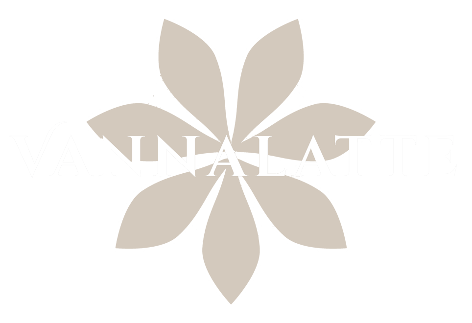

Estudiante de Sistemas - quinto superior
Formación en diseño de sistemas, modelado de datos, automatización y tecnología aplicada al negocio.
Desarrollo Web · Automatización · IA Local · Datos · IoT
Soy estudiante de Ingeniería de Sistemas de Información, quinto superior, con experiencia en desarrollo web, automatización de procesos, bases de datos e integración de soluciones con IA local e IoT.
Formación en diseño de sistemas, modelado de datos, automatización y tecnología aplicada al negocio.
Proyectos con evidencia visual, código, casos de estudio y resultados aplicados a web, IA, datos e IoT.
Capacidad para analizar procesos, construir herramientas y comunicar soluciones de forma clara.
Cada proyecto explica contexto, solución, rol, stack, evidencia visual y próximos pasos.
Las imágenes se pueden abrir en grande para revisar interfaz, flujo y resultado final.
Incluye proyectos web, automatización, IA local, bases de datos y arquitectura con Arduino.
No solo muestra código: comunica el problema que resuelve cada solución.
Trabajos seleccionados
Cada proyecto funciona como caso de estudio: contexto, problema, solución, tecnologías, evidencia visual y próximos pasos. La idea es que un reclutador pueda entender rápido qué hice, cómo lo construí y qué valor aporta.
Sistema full-stack para autoservicio, pedidos, roles, stock, tickets y reportes.
Asistente personal local inspirado en mi bulldog Hutch, orientado a productividad, automatización de Windows e integración con IA local.
Maqueta IoT con sensores infrarrojos FC-51, 4 zonas automatizadas, conteo de aforo, alarma y display de 7 segmentos.
Web corporativa para una propuesta de innovación y consultoría automotriz.
Landing comercial para programa automotriz con planes, beneficios, aliados y páginas legales.

Sitio comercial para marca artesanal con catálogo, carrito, recetas y presentación visual.
Macros, plantillas y reportes administrativos para reducir tareas repetitivas y ordenar datos.
Qué hago
Combino desarrollo de software, automatización, análisis de datos y tecnología aplicada al negocio.
Landing pages, sistemas administrativos, catálogos, interfaces responsive y experiencias orientadas a usuario.
Flujos con Python, Excel/VBA, generación de archivos, reportes y reducción de tareas repetitivas.
Asistentes personales, integración con modelos locales, lectura de documentos y automatización asistida.
Prototipos con Arduino, sensores, actuadores, lógica de control y soluciones académicas funcionales.
Trayectoria
Resumen profesional basado en mi CV: experiencia en desarrollo web, automatización de procesos, logística operativa y proyectos académicos de bases de datos.
Ingeniería de Sistemas de Información
Estudiante de séptimo ciclo, perteneciente al quinto superior, con interés en transformación digital, Cloud, IoT e IA aplicadas al negocio.
Vannalatte · Akinnova · Siempre Nuevo
Desarrollo de sitios web con HTML, CSS y JavaScript, diseño responsive, organización de contenido, catálogo de productos y enfoque en experiencia de usuario.
OFG Techno Peru SAC
Automatización de rendiciones con macros en Excel, exportación a matrices de control e integración de datos cloud-local para generación de archivos TXT.
Producción Riflo SAC
Gestión de aforo, atención directa al público, orientación a espectadores, control de acceso y apoyo en cumplimiento de protocolos de seguridad.
Diseño e implementación de una base de datos integral en SQL Server para inventario, compras y ventas, incluyendo modelado ER, lógico y físico, normalización, vistas, procedimientos almacenados, funciones y triggers.
Stack técnico
Herramientas que he aplicado en proyectos reales, académicos y personales.
HTML, CSS, JavaScript, React, Vite, Node.js, Express, Prisma, diseño responsive e interfaces web.
SQL, SQL Server, PostgreSQL, Oracle SQL Developer, modelado ER/lógico/físico, normalización, StarUML y COBIT 2019.
Excel, VBA, macros, Power Automate, Power BI, Power Apps, Python básico y Google Workspace.
Pensamiento analítico, comunicación efectiva, organización, trabajo en equipo, atención al detalle, adaptabilidad, proactividad e inglés B1.
Sobre mí
Estudiante de séptimo ciclo de Ingeniería de Sistemas de Información, con formación en diseño de sistemas, modelado de estructuras, gobierno de TI y desarrollo de soluciones digitales.
Me interesa aplicar tecnología al negocio mediante desarrollo web, automatización, bases de datos, Cloud, IoT e inteligencia artificial. Mi enfoque combina análisis, aprendizaje rápido, atención al detalle y construcción de soluciones funcionales.
Contacto
Puedo colaborar en desarrollo web, automatización de procesos, prototipos tecnológicos, bases de datos o soluciones con IA aplicada.